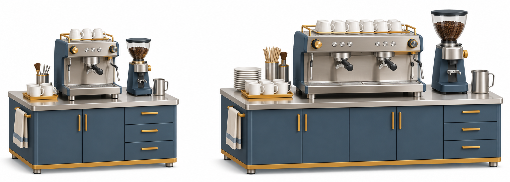

A 小规模
期初投入 20；每年净流入 7，持续 5 年；第 5 年另回收残值 2
决策理论与方法
第二章
现金流如何比较？
多投的钱是否值得？
大三经管类 · 4 学时
校园咖啡店 · 教学模拟；金额单位：万元

期初投入 20；每年净流入 7，持续 5 年；第 5 年另回收残值 2
期初投入 30；每年净流入 9.5，持续 5 年；第 5 年另回收残值 3
现金流口径与时点
货币时间价值与等值换算
盈亏阈值、产能与目标利润
投资指标与适用条件
互斥方案、增量与预算
案例讲解与独立核验
目标明确，存在可选方案
只设定一种明确的自然状态
可以算出各方案的结果
把需求、价格等冻结为已知输入
结论随这些输入成立
运筹学提供优化方法，本章聚焦投资评价
净现金流 = 流入 − 流出
只计因采用方案而改变的现金流
保持价格、税前税后和单位一致
期初投资记在 t = 0
每年经营净额通常记在年末
末年加上残值与营运资金回收
流出在零线下方；流入在零线上方。
A 方案现金流
现在投入 20，不折现
经营 7 + 残值 2 = 9
复利 F = P(1+i)ⁿ；折现 P = F/(1+i)ⁿ。先统一比较时点。
折现前
按 8% 折现后
把每笔年末收入分别折现，再相加
现值就是 nA，不需要除以零
| 已知 → 求解 | 典型问题 | 运算关系 |
|---|---|---|
| P → F / F → P | 现在与未来的单笔款项 | 复利终值 / 复利现值 |
| A → F / A → P | 等额年末款项的合计价值 | 年金终值 / 年金现值 |
| P → A / F → A | 等额还款 / 定额积累基金 | 资金回收 / 偿债基金 |
每年净流入
第 1 年 10 万元，以后每年少 0.3 万元
CFₜ = 10 − 0.3(t−1)
按 15% 各自折现
净现值 NPV：把各期净现金流折现到现在后相加，包含期初投资。
折现率从 0% 升到 20%，A 方案 NPV 会怎样变化？
保留 t = 0；切换年金、梯度或自定义逐期现金流。
选一笔未来现金流，写出它的折现期数和现值。
收入 S = pQ；利润 L = (p−v)Q−F。每杯贡献12元，先补固定成本。
收入
总成本
收入 = 成本 = 36 000 元/月
利润 = 12 × 3 000 − 24 000
= 12 000 元/月
同一利润线：L = 12Q−24 000。产能限制决定能走到曲线的哪里。
售价15元；旧设备 F=3 200、v=7，新设备 F=3 800、v=5（固定成本：元/月）。
p=8元/瓶，v=4元/瓶，F=40 000元；目标利润60 000元。
[-20, 7, 7, 7, 7, 9] 中，哪一笔不折现？
售价 18、变动成本 6、固定成本 24 000，盈亏点是多少？
产能只有 1 800 杯时，盈利结论应如何表述？
| 指标家族 | 代表指标 | 关注点 |
|---|---|---|
| 价值型 | NPV、NAV、PC、AC | 增加多少价值 / 付出多少成本 |
| 效率型 | IRR、ERR、NPVR、R | 收益率或单位投资的效果 |
| 时间型与相对型 | 回收期；差额 NPV、IRR | 多久收回 / 多投的钱是否值得 |
NPV=Σ[CFₜ/(1+i)ᵗ]，t=0,…,n；期初投入不折现。金额单位：万元。
教材设备 NPV
NPV = 0 的折现率即 IRR
这里是先流出、后流入的常规投资现金流
NAV = NPV / (P/A,i,n)
把总现值换成等额年值
同项目接受与否与 NPV 一致
PC：费用流的现值
AC = PC / (P/A,i,n)
服务效果相同时选费用较小者
Σ CFₜ / (1 + IRR)ᵗ = 0
常规投资现金流：IRR ≥ 基准收益率，才达到要求
[-100, 20, 30, 20, 40, 40] 万元
10%与15%两点线性插值约13.58%；精确求根约13.47%
[-100, 230, −132]
10% 与 20% 都使 NPV = 0
给定基准折现率，直接评价净现值
沿用A方案：[-20,7,7,7,7,9]万元；动态回收期按8%折现。
累计原始现金流
按8%折现后累计
2 + 6/7（期内均匀回收近似）
先按8%折现，再找累计值跨零的位置
采用某方案不影响另一方案
分别做绝对效果检验
所有达标项目均可选
最多选择一个方案
先判是否值得做，再比较优劣
保留“不投资”作为零基准
同为5年：A投入20、B投入30万元；静态回收期分别约2.86、3.16年。
B − A 的 NPV
ΔNPV = 9.97 − 9.31
≈ +0.66 万元
[-10, 2.5, 2.5, 2.5, 2.5, 3.5]
| Y 的年现金流 | 按表格 7.2 | 按正文 7.8 |
|---|---|---|
| 共同条件 | X 投资 20，每年 5.8 | Y 投资 30；均为 10 年 |
| NPV：X / Y（12%） | 12.77 / 10.68 | 12.77 / 14.07 |
| ΔNPV：Y − X | −2.09 | +1.30 |
| 推荐（互斥） | X | Y |
设备 1：2.5 万，年收益 0.75 万，5 年
设备 2：5 万，年收益 1 万，9 年
不能只按各自寿命的 NPV 直接排名
设备可按同样条件无限重复更新
服务需求持续，残值为 0
比较重复链现值或等额年值
| 工具 / 公式 | 输入约定 | 核验 |
|---|---|---|
| Excel NPV | NPV(rate, CF₁:CFₙ) + CF₀ | CF₀ 在函数外单独加 |
| Excel IRR | IRR(CF₀:CFₙ) | 包含全部现金流与顺序 |
| 本网页 / Python 求和 | Σ CFₜ/(1+i)ᵗ，从 t=0 开始 | 逐期现值相加应等于 NPV |
与继续使用旧设备相比的增量；按教材不计所得税，i=10%。
更新的增量现金流
新设备440 − 旧设备可售190
每年78−35=43；第15年加残值20
自制相对外购；按教材税后口径，i=12%。金额单位：万元。
自制相对外购的现金流
设备38 + 营运资金10
经营13.8 + 残值2 + 营运资金10
各开采时点折现到现在
第 4 年：14 000 / 1.1⁴
≈ 9 562 万元，六个时点中最高
未来净收益增加，也要多折现一年
每条色块长度代表项目投资额，三组都用满600万元；比较组合的总NPV。
A/B年度投资与月度盈亏是独立示例；合并建模须另行说明换算与现金流口径。
两设备现金流表；金额单位、年末时点、税与残值口径。
NPV、IRR、回收期；盈亏点、产能及预算检查。
说明推荐条件；给出排序改变的阈值；附独立手算和 AI 核验记录。
每组选择：NPV 与 IRR 冲突、教材数据不一致、资本限额排序。
先展示现金流或原始表；说明方法、假设、结论和反例。
现场改变一个参数；讲解组解释为何结论改变或保持。
[-100,60,60]，i = 10%，NPV 是正是负？
两个方案都达标，但较小方案 IRR 更高，能立即选它吗？
项目不可分割时，NPVR 排序为何可能漏掉最优组合？
把现金流统一到同一时点
NPV 看增加的价值
IRR 与回收期补充解释
先检查达标与可行性
互斥方案比较增量
有预算时比较可行组合
| 换算 | 公式（i ≠ 0） | i = 0 |
|---|---|---|
| P → F；F → P | F=P(1+i)ⁿ；P=F/(1+i)ⁿ | F=P |
| A → F；A → P | F=A[(1+i)ⁿ−1]/i；P=A[1−(1+i)⁻ⁿ]/i | F=P=nA |
| P → A；F → A | A=Pi/[1−(1+i)⁻ⁿ]；A=Fi/[(1+i)ⁿ−1] | A=P/n=F/n |
CFₜ = A₁ + (t−1)G，t = 1,…,n
P = Σ [A₁+(t−1)G] / (1+i)ᵗ；F = P(1+i)ⁿ
A等值 = P / (P/A,i,n)
i = 0 时：P = nA₁ + G·n(n−1)/2
后续净收益按外部基准收益率 i₀ 归集到期末
与投资支出按 ERR 复利到期末的价值相等
FV净收益 = Σ NBₜ(1+i₀)ⁿ⁻ᵗ，t=1,…,n
ERR = (FV净收益 / I₀)^(1/n) − 1
各比率＝分子÷分母；四类静态收益率按本教材p.35的具体口径列示。
| 指标 | 分子 | 分母 |
|---|---|---|
| 净现值率 NPVR | NPV | 投资现值 |
| 全部投资收益率 | 年利润＋折旧与摊销＋利息支出 | 全部投资额 |
| 权益投资收益率 | 年利润＋折旧与摊销 | 权益投资额 |
| 投资利税率 | 年利润＋税金 | 全部投资额 |
| 投资利润率 | 年利润 | 权益投资额（教材本式） |
| 指标 | 计算 | 使用条件 |
|---|---|---|
| ΔNPV | NPV大投资 − NPV小投资 | 同一基准、时期与口径 |
| ΔIRR | 使增量现金流 NPV 为 0 的利率 | 常规增量现金流时可用单根判别 |
| 差额回收期 | ΔI / 年度净现金流增量 | 增量恒定且为正；静态近似 |
t=0与t=1均有投资流出；动态回收期按10%折现。金额单位：万元。
| 时点 t | 0 | 1 | 2 | 3 | 4 | 5 | 6 |
|---|---|---|---|---|---|---|---|
| 净现金流 | -6000 | -4000 | 3000 | 3500 | 5000 | 4500 | 4000 |
第3年末尚缺3 500；第4年流入5 000。
第4年末现值尚缺1 112.36；第5年折现流入2 794.15。
| 项目 | 投资 / 万元 | NPV / 万元 |
|---|---|---|
| A / B | 200 / 120 | 120 / 54 |
| C / D | 40 / 90 | 5 / 22.5 |
| E / F | 130 / 360 | 28.6 / 64.8 |
| G / H | 30 / 150 | 4.2 / 57 |
| 教材题号 | 练习用途 | 提交要求 |
|---|---|---|
| 1、6 | 等差现金流与还款方案 | 画时点，写等值关系 |
| 2、7 | 盈亏与设备比较 | 阈值、产能与利润分开判断 |
| 3、4、5、8 | IRR、回收期与独立项目 | 注明判据、单位和回收后现金流 |
| 9、10 | 分期投资与互斥方案 | 逐期现金流表 + NPV 复核 |
| 教材范围 | 本演示位置 | 网页入口 |
|---|---|---|
| §1—2，p.17—24 | 条件、现金流与等值换算 | 现金流；公式速查 |
| §3，p.24—29 | 盈亏、更新阈值、目标利润 | 盈亏实验 |
| §4—6，p.29—43 | 指标、互斥比较、软件口径 | 方案比较；知识速查 |
| §7与习题，p.44—49 | 四类案例、项目与附录 | 案例与预算；项目与测验 |
← → 翻页 · Home / End 首尾页 · F 全屏 · N 讲稿